文本
试题
题尾
卷尾
其他
页面布局

级别 | 复习模块 | 题型 | 考查内容 |
1级 | 交变电流 | 计算题 | 交变电流计算、远距离输电 |
2级 | 振动和波 | 计算题 | 简谐运动、机械波 |
3级 | 光学 | 计算题 | 几何光学、波动光学、光电效应 |
4级 | 原子物理 | 计算题 | 原子结构、核反应 |


交流电是伟大的发明，它让“华灯耀万家”成为了可能，让“同上一堂课”变为了现实．
最早的发电机是由 发明的，教材介绍了如图的装置．当圆盘向同一个方向时快时慢地转动时，通过电阻的电流是 （选填“交流电”或“直流电”）．
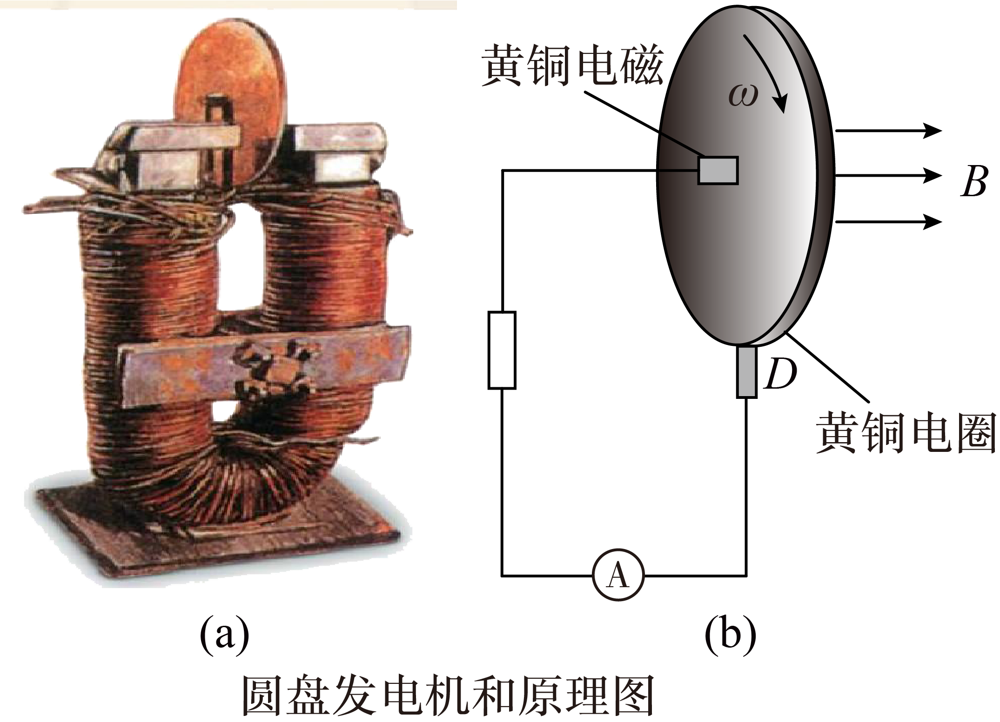
a．发电机发出的交流电，需要通过升压变压器后再进行远距离传输，该变压器同发电机相连的线圈匝数 同输电线相连的线圈匝数（选填“大于”或“小于”）．
b．输送相同的电功率时，高压输电有利于减小 损耗．
某理想变压器的原线圈匝数为
a．实际变压器存在损耗，主要有 、导线电阻产生焦耳热损耗等；
b．因此，在“探究变压器原、副线圈电压与匝数关系”实验中，测得的原、副线圈的电压比
如图所示，在足够大且磁感应强度为
上问中，
a．线框在匀速转过
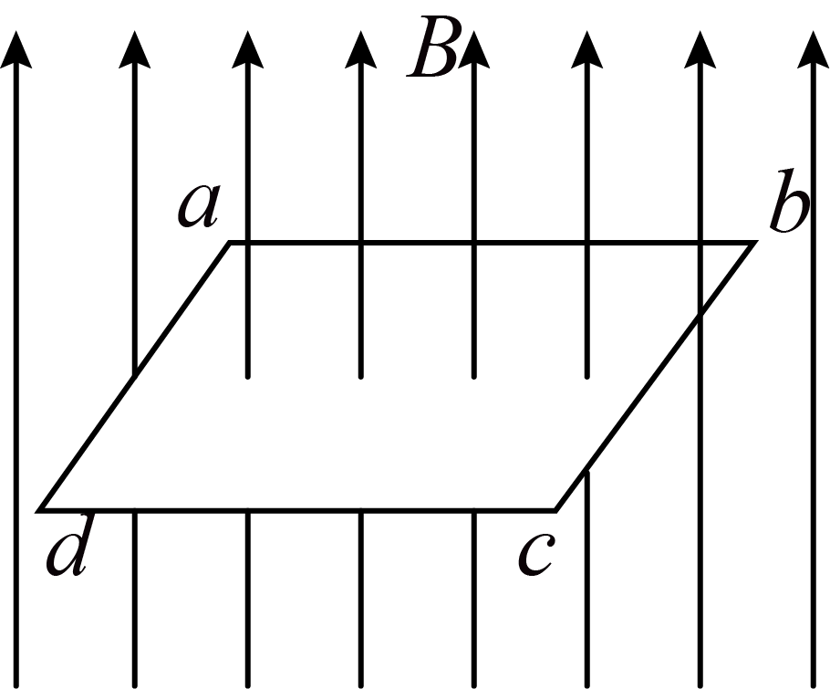
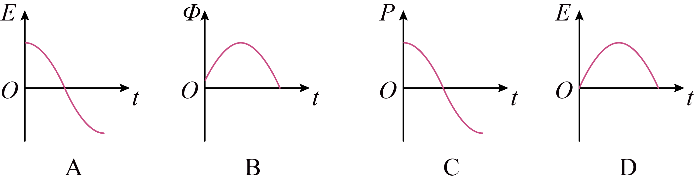
b．线框匀速地持续转动，周期为
用量程合适、精度足够的电压传感器，安全正确地测量中华人民共和国境内的家庭电路中火线和零线间的电压，得到随时间变化的关系式
变压器和远距离输电
汽油机做功冲程开始时，汽缸中的汽油、空气混合气要靠火花塞点燃，但是汽车蓄电池的电压只有
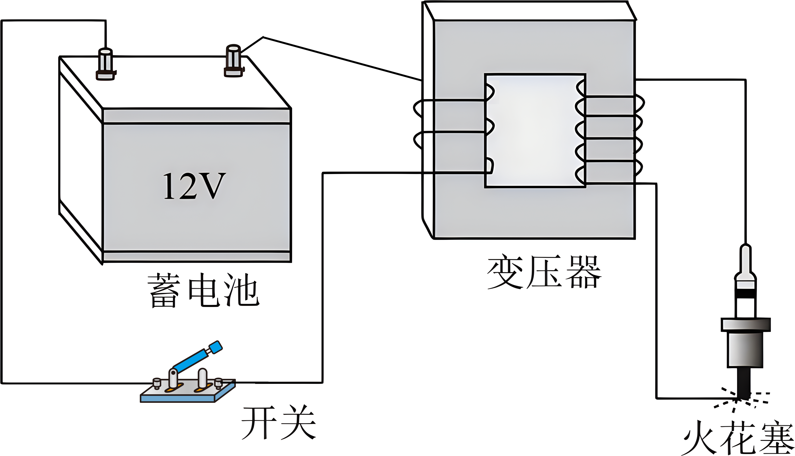
该设计方案不可行，因为蓄电池提供的是恒定电流，变压器不能改变其电压
该设计方案可行，因为变压器能将恒定电流变为交变电流
该设计方案可行，因为通过变压器原线圈的是变化的电流，可以通过变压器发生互感现象
该变压器一定是降压变压器
如图甲所示，理想变压器原线圈接图乙所示的交变电流，原、副线圈的匝数比为
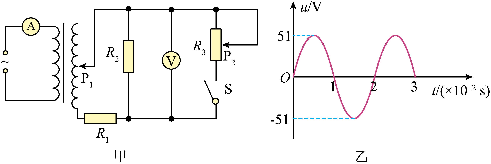
电压表的读数约为
只将滑片
闭合开关S，电压表
开关S闭合时，将滑片
“西电东送”是我国西部大开发的标志性工程之一、如图是远距离输电的原理图，假设发电厂的输出电压
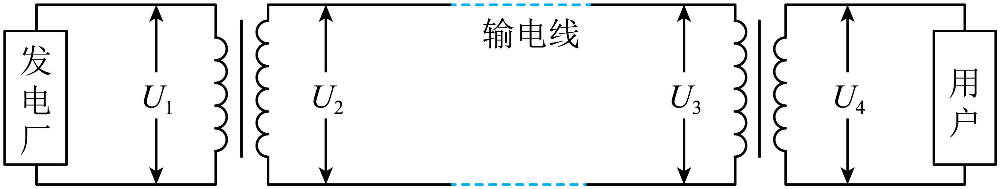
若输送总功率不变，当输送电压
在用电高峰期，用户电压
当用户负载增多，升压变压器的输出电压
当用户负载增多，通过用户用电器的电流频率会增大
家用燃气灶点火装置的电路如图（甲）所示，转换器将直流电压转换为如图（乙）所示的正弦交流电，并接到理想变压器的原线圈上．当两点火针间电压大于
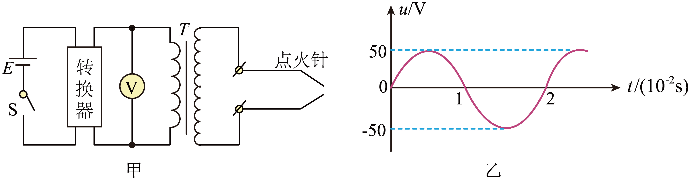
要点燃燃气，变压器副线圈与原线圈的匝数之比
当
查史料可知，1882年珍珠街电站采用6台直流发电机，输出总功率为661.5kW，电能输送的最远距离为
电流在输电线路上损耗的功率占发电机输出功率的百分比是多少？
估算直流发电机的输出电压；
若将输电距离增加一倍，还能否为6000盏16W的爱迪生灯泡正常使用？
弹簧振子是一种典型的振动，它的这种振动可以称为简谐运动．简谐运动是最简单、最基本的振动．
一个弹簧振子在光滑的水平面上做简谐运动，其中有两个时刻弹簧振子的弹力大小相等，但方向相反，则这两个时刻振子的（ ）
速度一定大小相等，方向相反
加速度一定大小相等，方向相反
位移一定大小相等，但方向不一定相反
以上三项都不一定大小相等方向相反
如图甲所示，轻弹簧上端固定，下端系一质量为m=0.5kg的小球，小球静止时弹簧伸长量为10cm．现使小球在竖直方向上做简谐运动，从小球在最低点释放时开始计时，小球相对平衡位置的位移y随时间t变化的规律如图乙所示，重力加速度g取10m/s2．下列说法正确的是（ ）
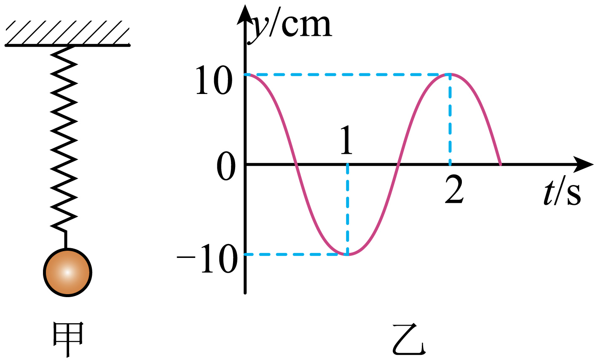
弹簧的劲度系数为k=50N/m
此题选取竖直向上为正方向
小球运动到最高点时弹簧弹力为0
t=0.25s时小球相对平衡位置的位移y=5m
已知弹簧的弹性势能大小为
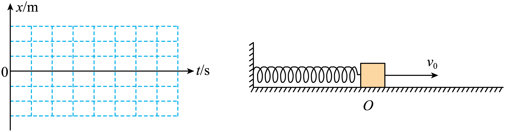
0~0.5s，物块的运动情况为
弹簧的最大伸长量xm
物块的最大加速度am
规定向右为正方向，画出物块的位移−时间图像（至少画出一个周期）
物理的统一美
表面看似完全不同的物理现象背后可能蕴含着相同的原理和规律．物理学中这种简洁美、统一美和谐而浪漫．例如在某些条件下，在光滑圆弧轨道上的小球和在固定悬点下用细线拴着的小球运动规律是相似的．请回答以下问题：
单摆通过平衡位置时，小球受到的回复力（ ）
指向地面
指向悬点
数值为零
垂直于摆线
竖直面内的光滑圆弧槽上，两个小球甲、乙（视为质点）同时由静止释放，其中甲球的初位置离圆槽最低点
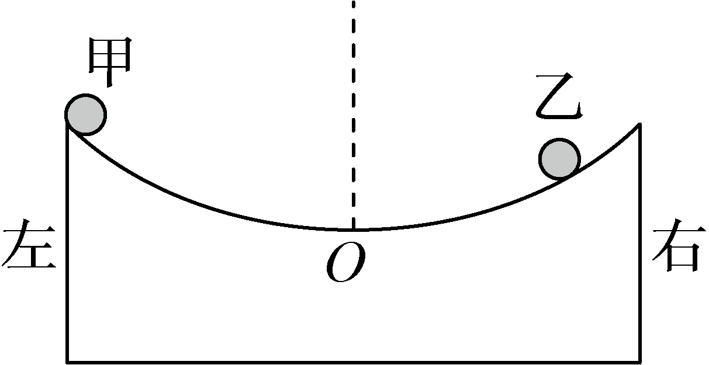
甲的速度大，相遇在
乙的速度小，相遇点在
甲的速度大，相遇点在
无法确定，因为两小球的质量关系未知
质量为
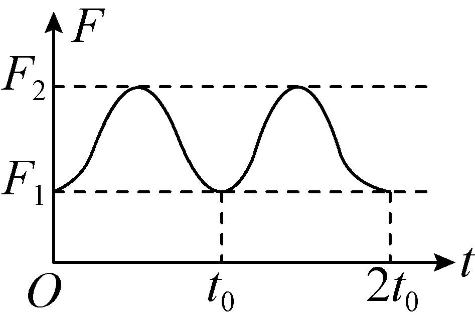
图甲中摆球表面包有一小块橡皮泥，在竖直平面内其振动图像如图乙所示，某时刻橡皮泥瞬间自然脱落，不考虑单摆摆长的变化，若
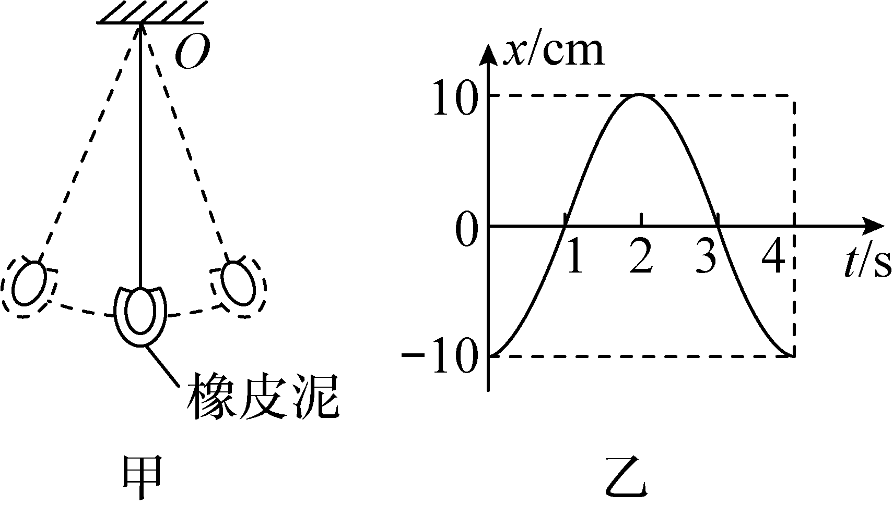
如图所示，张紧的绳子上挂了
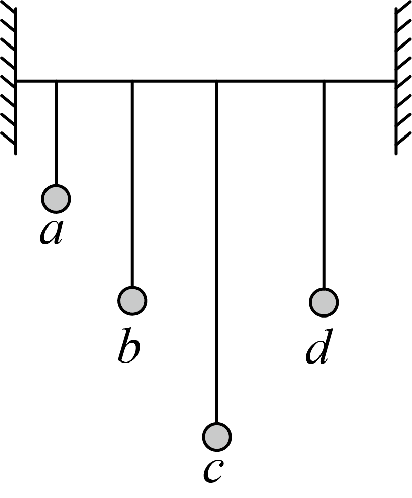
各摆的周期关系
某同学做“用单摆测定重力加速度”实验，请回答下面的问题：
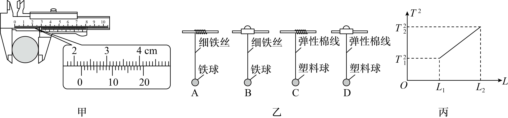
在实验中，你认为图乙中四种组装单摆方式正确的是 ；
如图甲所示，用游标卡尺测得小球的直径
为减小实验误差，多次改变摆长
如图甲所示，在天花板上的
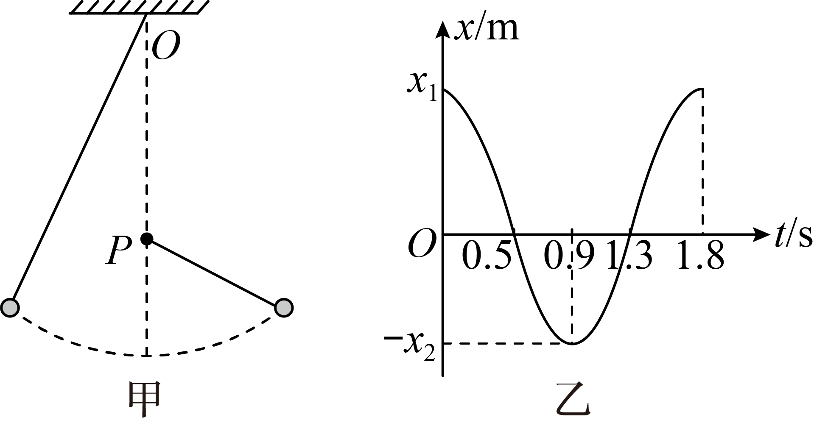
单摆的振动周期．
钉子的位置
请分析并说明摆球摆到两侧最高点的位置是否等高．
图像中
弹性绳的一端做简谐运动、可以在绳上形成简谐波．
弹性绳沿x轴方向放置，左端在原点O，使绳的左端沿y轴方向做简谐运动，
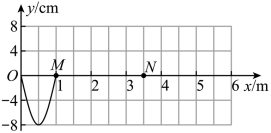
该绳波是 ．
横波
纵波
混合波
（简答）说明（1）的依据．
这列波的波速大小为
如图，两种均匀弹性绳Ⅰ、Ⅱ相接，直角坐标系
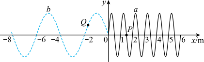
关于两列绳波说法正确的是 ．
波源的起振沿
此刻b波传到的位置是
a、b两列波的频率之比为
质点P比Q先到最大位移处
经过足够长的时间后，绳Ⅰ中具有
弹性绳上相距
如图所示，在平静的湖面上，一根树枝周期性地轻点水面，在水面上形成水波．
树枝连续轻点平静水面的O处，形成的水波近似看作简谐横波．某时刻（
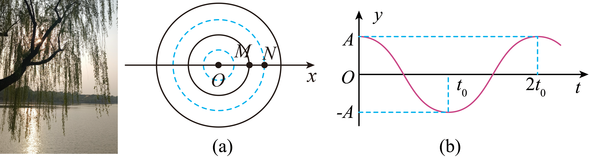
湖面上形成的水波图样是一个个等间距的同心圆，这是因为水波的 和 大小不变（选填：振幅、频率、波速）．
已知质点M、N在x轴方向上的距离为a，则水波的波长为 ，水波的传播速度为 ．
若观察到树枝轻点水面产生的水波图样如图（c）所示，这可能是因为（ ）
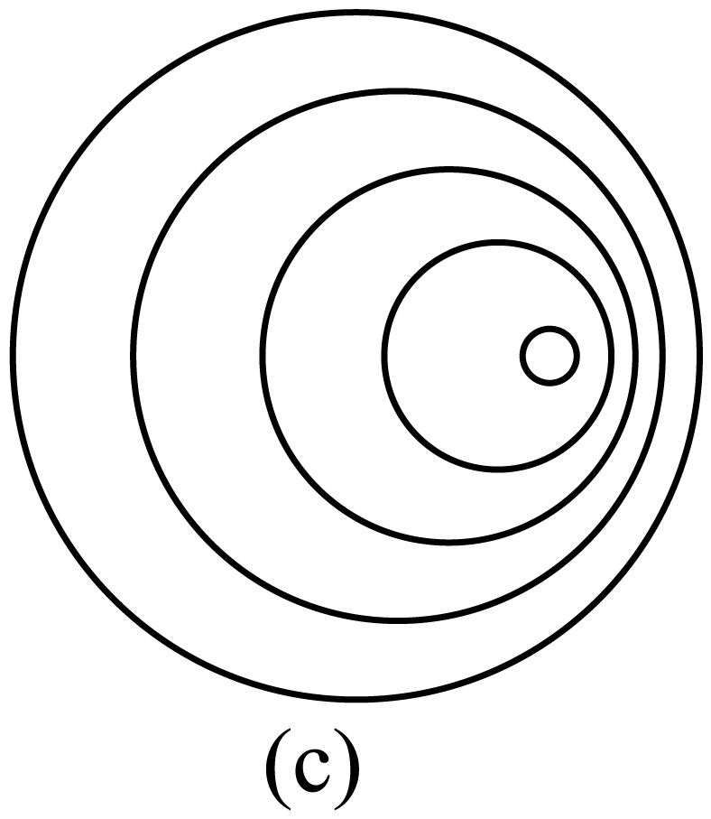
点击水面的位置向左移动
点击水面的位置向右移动
点击水面的振幅减小了
点击水面的振幅增大了
如图（d），水面上的O点是波源，P、Q为两块固定挡板．
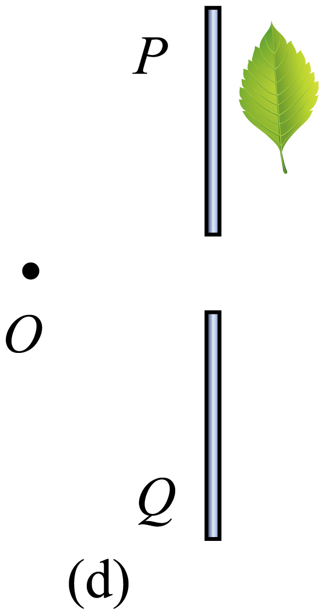
现能观察到水面上的树叶发生振动，是因为波发生了 现象；
干涉
衍射
为了使树叶停止振动，可 波源O的频率．
增加
减小
氦氖激光器是实验室中的常用仪器，它可以发出波长为六百多纳米的红色激光．
关于激光下列说法中正确的是（ ）
激光是一种人造光
红色和绿色的激光在同一介质中波速都相同
全息成像是利用了激光的干涉来记录并再现物体三维信息的技术
激光测距是利用了激光的方向性好的特点
小明利用氦氖激光器作为光源测量玻璃砖的折射率．如图所示，对于该实验，以下说法中正确的是（ ）
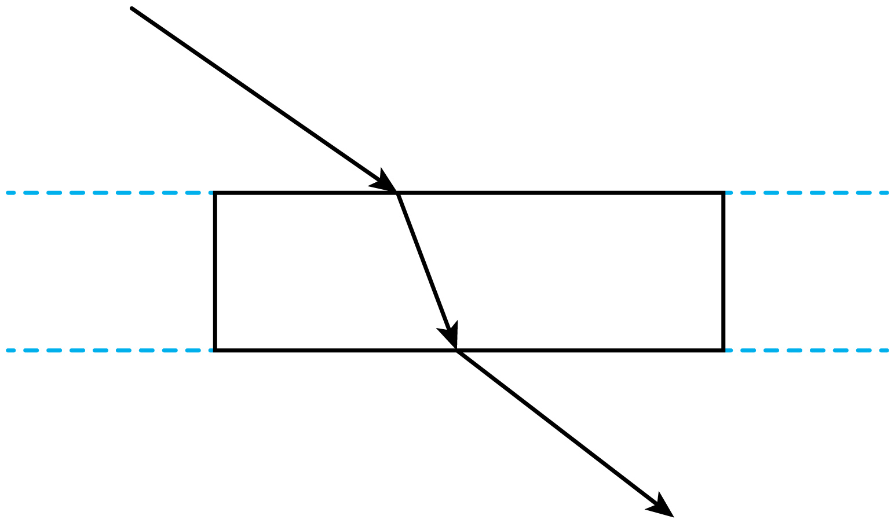
入射角不宜过小，否则可能会导致实验误差偏大
入射角不宜过大，否则激光在射出玻璃砖时可能会因角度过大而发生全反射
如果在激光发射器和玻璃之间加上一张偏振片，则光强一定会减少一半
小明同学为了避免笔尖划到玻璃砖的光学面，将上边界画的比实际位置更往上一些，若其它操作无误，得到的折射率会比真实值偏小
小明同学想测量出该激光的波长，激光通过双缝后投射到光屏
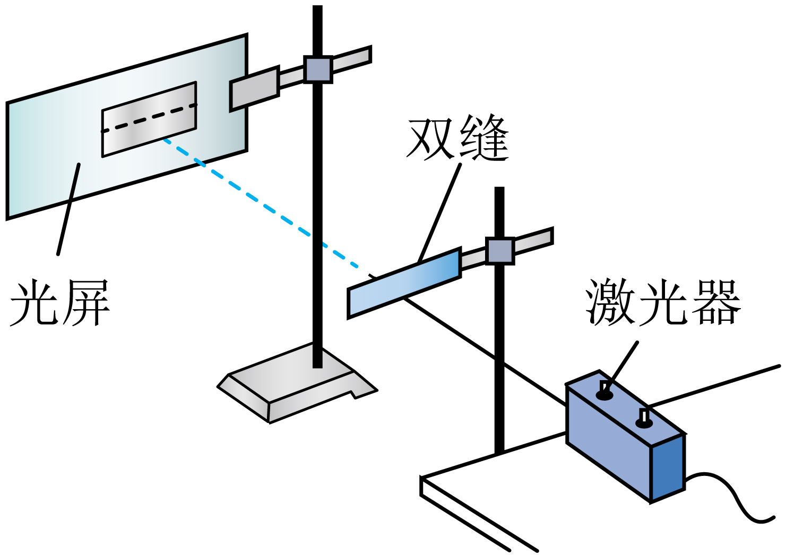
若想增加条纹的宽度，可
将激光器靠近双缝
将光屏靠近双缝
将光屏远离双缝
调换间距更小的双缝
光屏中的条纹如下图所示，由刻度尺读出
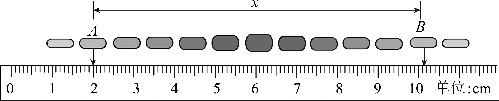
将塑料瓶下侧开一个小孔，瓶中灌入清水，水就从小孔流出．将激光水平射向塑料瓶小孔，观察到激光束沿水流方向发生了弯曲，光被完全限制在水流内，出现了“水流导光”现象．“水流导光”是光的 现象，为了更容易发生“水流导光”现象，应选用折射率 的液体．
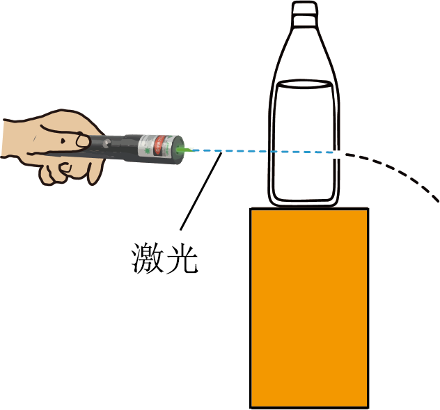
光纤通信技术是将信息转变为光信号，由光纤传输出去．光纤由纤芯和包层组成，其剖面如图所示，其中纤芯材料的折射率
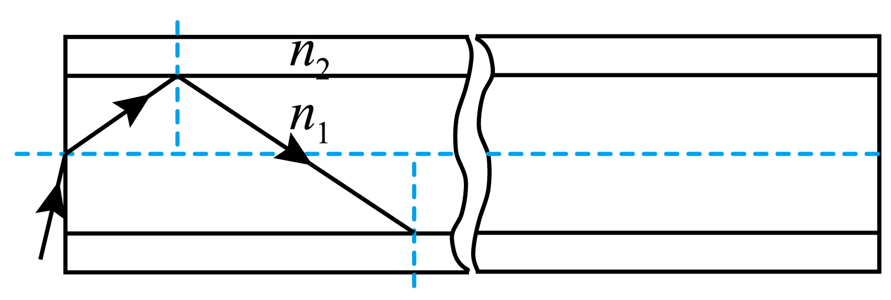
试通过计算说明从光纤一端入射的光信号是否会通过包层“泄漏”出去；
利用光纤发出的信号最长需要多少时间．（保留
光有诸多的性质，例如折射、衍射、干涉等，展现出很多奇特的现象．不同种类的光又有不同的作用，为我们生活的方方面面服务，与普通光源相比，激光有着显著不同的特征．
下列光的现象中能说明光是横波的是（ ）
折射
衍射
干涉
偏振
如图，一根筷子竖直固定于圆柱形薄玻璃杯底部的A点，现向薄玻璃杯内注入清水，人眼从B点附近沿BA方向正对薄玻璃杯的侧壁，可能观察到的主要现象是（ ）
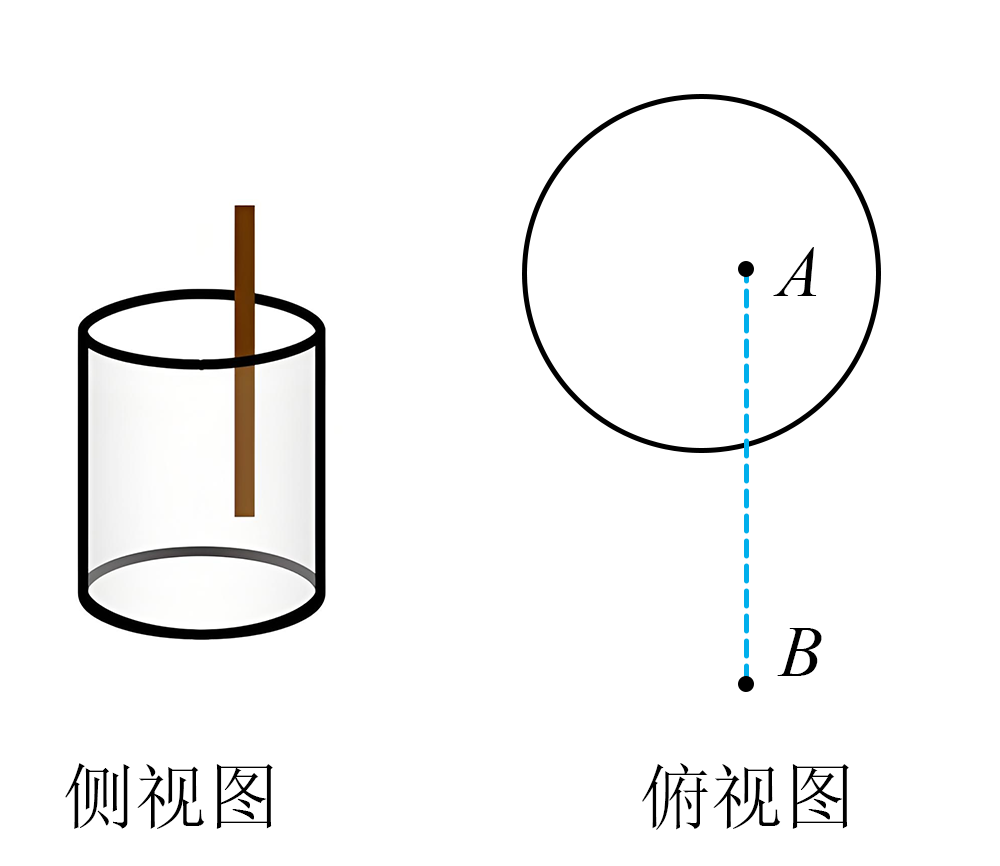
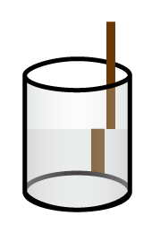
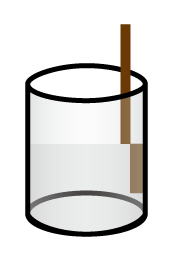
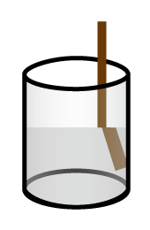
用单色红光通过尺寸很小、不同形状的小孔，光屏上呈现出如图的图样，则小孔形状，判断正确的是（ ）
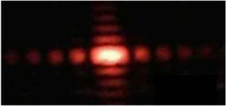
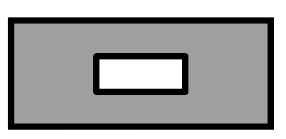
某同学用光的干涉规律检测工件表面的平整度与设计要求之间的微小差异．将精度很高的标准玻璃板（样板），放在被检查工件上面，如图（a）所示，在样板的右端垫一片薄片，使标准玻璃板与被检查平面之间形成一楔形空气膜．用平行单色光向下照射，检查不同平面时，观察到图（b）所示干涉条纹，若换用波长更长的单色光照射，图（b）中的条纹间距将 （选填“变大”“变小”或“不变”）；若观察到的是图（c）所示的干涉条纹，条纹弯曲处对应着被检查平面处是 的（选填“上凸”或“下凹”）．
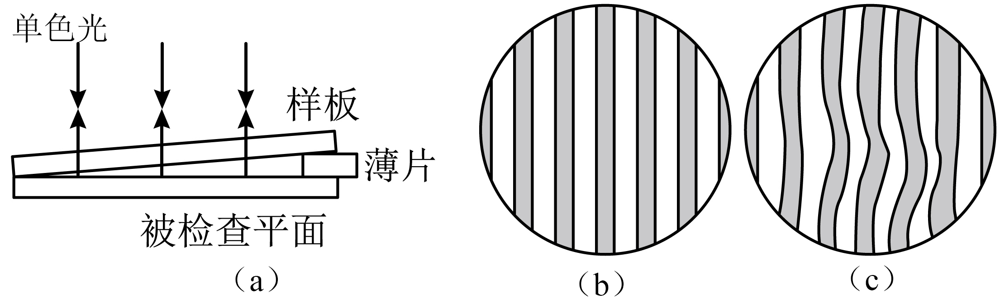
光可见光为我们呈现了色彩斑斓的世界和各种有趣的现象，其本质是一种电磁波，他们不仅能够产生反射、折射，还能产生干涉和衍射，能够传递能量，携带信息．
下面关于光的现象和原理说法不正确的是（ ）
原本透明的肥皂泡在阳光的照射下变得五彩斑斓主要是因为光的折射
激光防伪标识上的彩色图案是因为光的衍射
用“偏振片”可以检验并得到：光是横波
光波和超声波属于不同性质的波
某实验小组利用双缝干涉实验装置分别观察a、b两单色光的干涉条纹，发现在相同的条件下光屏上a光相邻两亮条纹的间距比b光的小．他们又将a、b光以相同的入射角由水斜射入空气，发现a光的折射角比b光的大，则（ ）
在空气中传播时，a光的波长比b光的大
在空气中传播时，a光的频率比b光的小
在水中传播时，a光的速度比b光的大
由水射向空气，a光全反射临界角比b光的小
用单色光做双缝干涉实验，屏上出现了明暗相间的条纹，则（ ）
中间的亮条纹宽，两侧的亮条纹越来越窄
中间的亮条纹窄，两侧的亮条纹越来越宽
遮住一条缝后，屏上仍有明暗相间的条纹
若改用白光做实验，不能获得干涉条纹
在单缝衍射实验中，仅减小缝宽，光屏上演示条纹的（ ）
间距变宽，光强增强
间距变窄，光强增强
间距变宽，光强减弱
间距变窄，光强减弱
某些特殊的人工材料，入射角i与折射角r依然满足
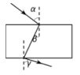
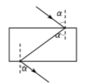
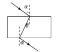
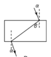
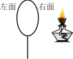
右图为在暗室中观察肥皂薄膜干涉的实验装置，灯芯上洒有食盐的酒精灯发出黄色火焰，在图示的情况下，从肥皂薄膜的 （选填“右面”或“左面”）观察时，可看到黄黑相间的 （选填“水平”、“竖直”或“倾斜”）干涉条纹，当用白光照射肥皂薄膜时，可观察到 （选填“黑白”或“彩色”）的干涉条纹．图甲所示超市的条形码扫描探头工作原理如图乙所示，打开扫描探头，发光二极管发出红光，将探头对准条形码，红光遇到条形码的黑色线条时，光几乎全部被吸收；遇到白色空隙时光被大量反射到探头上，光电管发生光电效应产生光电流．通过信号处理系统，条形码就被转换成了脉冲电信号．
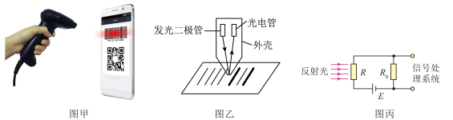
扫描探头的工作原理说明光具有 (选填“A.波动性”或“B.粒子性”)，若将发光二极管换为发蓝光的二极管，则扫描探头 (选填“A.能”或“B.不能”)正常工作．
若扫描探头在条形码上快速移动， (选填“A.来得及”或“B.来不及”)发生光电效应．
利用光电管将条形码信息变成电脉冲信号，经信号处理系统完成对条形码信息的识别，等效电路如图丙所示．其中R为光电管的等效电阻,
小舞想利用如图所示装置进一步研究光电效应，如果先让锌板带负电，再用紫外线灯照射锌板，则验电器的张角将 (选填“A.变大”、“B.不变”或“C.变小”)．
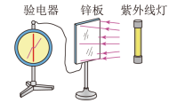
某金属的遏止电压与入射光频率的关系如图所示，若电子的电荷量用
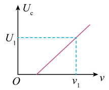
如图所示，一群处于第
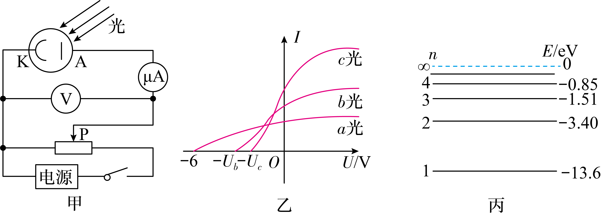
氢原子的发射光谱属于 （选填“明线”“吸收”或“连续”）光谱．一群处于第4能级的氢原子，原子最终都回到基态，总共能发出 种不同频率的光．
求
只有
光照射到物体表面时，如同大量气体分子与器壁的频繁碰撞一样，将产生持续均匀的压力，这种压力会对物体表面产生压强，这就是“光压”，用
原子内的各种粒子
阴极射线的研究和电子的发现揭开了人类探索物质微观结构的序幕，放射性射线的研究深入到原子核的内部．已知质子质量mp=1.6726×10−27kg，中子质量mn=1.6749×10−27kg．
如图，放射源发出未知射线，移开强磁场后计数器测得的数值保持不变，再将薄铝片移开，计数器的测得的数值大幅上升，则未知射线中包含（ ）
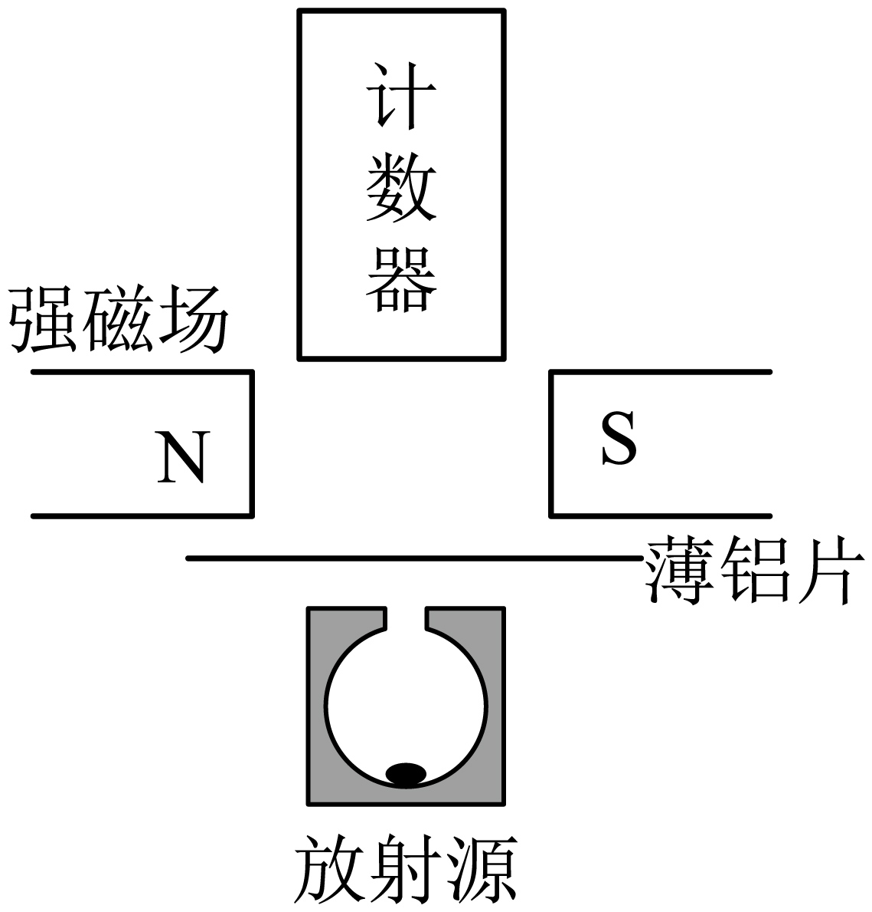
根据量子理论可以推断或解释的是（ ）
某原子从能级A跃迁到能级B时辐射出波长为λ1的光子，从能级A跃迁到能级C时辐射出波长为λ2的光子，且λ1<λ2，则该原子从能级B跃迁到能级C将 （选填“吸收”或“发射”）光子，光子的波长为 ．
电子显微镜可观测的分子线度为电子的德布罗意波长的n倍（n>1）．已知普朗克常量为h．能观测到线度为d的分子的电子动量为 ．
已知α粒子的结合能为4.347×10−12J，则α粒子的质量约为（ ）
线度（半径） | 质量 | 电量 | |
质子 | |||
电子 | |||
引力恒量 | 静电力常量 | ||
在计算质子和电子间相互作用力的大小时 (选择： A.能 B.不能)将二者看作质点和点电荷，判断依据是 ．
质了与电子之间同时存在万有引力
氢原子的能级图如图所示．
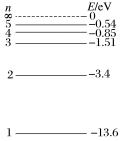
已知红光的能量范围为
红光
绿光
蓝光
紫光
普朗克常量取
大量的氢原子处于
原子辐射一系列频率的光子
原子吸收一系列频率的光子
原子吸收某一频率的光子
原子辐射某一频率的光子
人造地球卫星绕地球做圆周运动与玻尔氢原子模型中电子绕原子核做圆周运动类似．
下列说法正确的是
它们做圆周运动的向心力大小跟轨道半径成反比
它们都只能在一系列不连续的轨道运动
电子轨道半径越大，氢原子能量越大
同一卫星在不同轨道运动时，机械能相等
人造地球卫星与氢原子模型中电子的运动高度相似的原因是： ．
根据玻尔原子模型，氢原子在辐射电磁波后，原子的电势能 ，氢原子的核外电子的速度 (均选填“减小”“不变”或“增大”)
天然放射性现象说明 具有复杂结构．铀
如图，放射线从铅盒的小孔竖直向上射出，在小孔的正上方
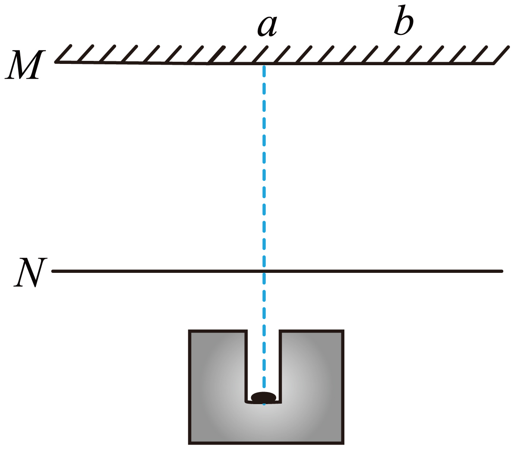
打到
打到
匀强电场方向水平向左
放射线中只有
如图，
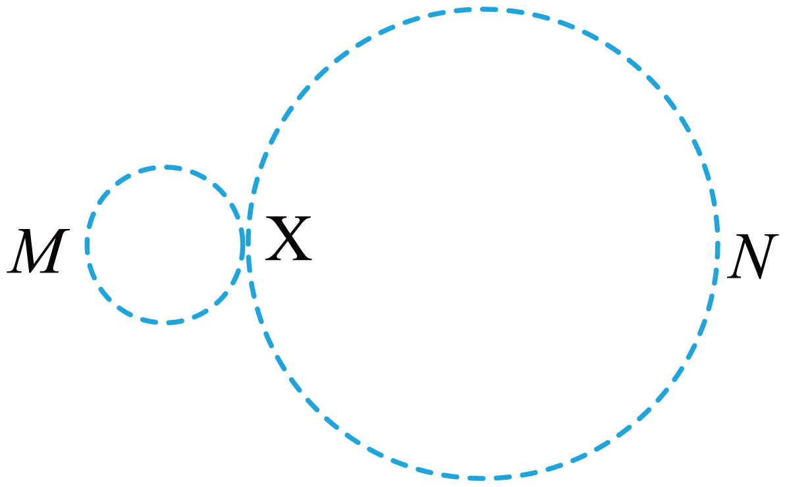
圆周
磁场方向垂直纸面向里
粒子与新核的动能相同
微观粒子
轴辐射的衰变方程为
玻尔建立的氢原子模型，仍然把电子的运动视为经典力学描述下的轨道运动，同时引入量子化的概念，认为原子只能处于不连续的轨道和能量状态中．已知元电荷为
类比太阳系中行星与太阳之间引力势能的表达式，以无穷远处为零势能面，氢原子中电子与氢原子核间静电相互作用的电势能为 （
氢原子的能量等于电子绕原子核运动的动能、电子与原子核系统的电势能的总和．已知氢原子核外电子第
i.处于基态的氢原子的能量E ；
ii.它从子数
用人工方法得到放射性同位素，这是一个很重要的发现，天然的放射性同位素只不过40多种，而今天人工制造的放射性同位素已达1000多种，每种元素都有放射性同位素，放射性同位素在工业、农业、医疗卫生和科学研究的许多方面得到了广泛的应用．
带电的验电器在放射线照射下电荷会很快消失．其原因是（ ）
射线的贯穿作用
射线的电离作用
射线的物理、化学作用
以上三个选项都不是
下图是工厂利用放射线自动控制铝板厚度的装置示意图．如果工厂生产的是厚度为1毫米的铝板，在α、β、γ三种射线中，你认为对铝板的厚度控制起主要作用的是 射线．（选填A.α、B.β、C.γ）
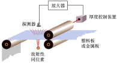
有一块手表，夜光材料是锰和硫化锌混合物，镭的衰变方程为
镭的衰变为β衰变
镭在高温时衰变比在低温时衰变更快
X的质量数比其核电荷数大2
X能穿透1cm厚的纸板
居里夫人一份约120年前的手稿被保存在法国国立图书馆，记载了放射性元素钋和镭的发现，手稿中残留的铺至今仍具有放射性，因此存放在铅盒里．已知镭的半衰期是1620年．如图所示表示细含量的直方图中，“今年”表示今年手稿上镭的含量，则可以表示当年手稿上铺含量的是（ ）
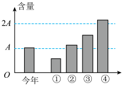
①
②
③
④
嫦娥四号探测器上安装了一块核电池，利用放射性同位素发射的高能射线照射热电元件，将热能转化为电能，符合这种核电池原理的核反应方程是（ ）
下载设置
![]()